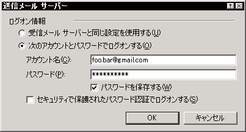

でも、このサーバには SMTP サーバ( qmail )は立ててるけど、POP サーバは立ててない。
だって面倒。
で、どうしているかというと:
- Reply-To: <foo@bar.com> ヘッダをつけて送信する。
- foo@bar.com 宛てのメールは dot.qmail-foo で、foo.bar@gmail.com に転送。
PC 環境を再構築するハメになってみて、この辺の設定がメンドかったのでメモ。
( OutlookExpress の場合です)





百聞は一見に如かず。
Last-modified: 2006-09-01 (金)
Copyright ©master_at_tonextone.com All rights reserved.
【サーバサイド MVC】 M(モデル) = RDB V(ヴュー) = XHTML + CSS C(コントローラ) = PHP,Perl,Ruby,...
【クライアントサイド MVC】 M(モデル) = XML,JSON V(ヴュー) = XHTML + CSS C(コントローラ) = JavaScriptこの文脈でのサーバサイドの役割は「M(モデル)に徹する事」になる。
[ 続きがあります ]
| « | September 2006 | |||||
|---|---|---|---|---|---|---|
| Su | Mo | Tu | We | Th | Fr | Sa |
| 1 | 2 | |||||
| 3 | 4 | 5 | 6 | 7 | 8 | 9 |
| 10 | 11 | 12 | 13 | 14 | 15 | 16 |
| 17 | 18 | 19 | 20 | 21 | 22 | 23 |
| 24 | 25 | 26 | 27 | 28 | 29 | 30 |